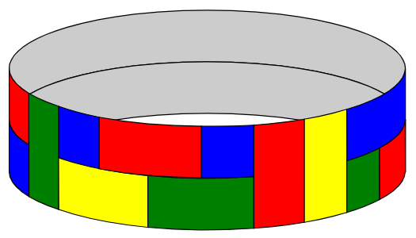
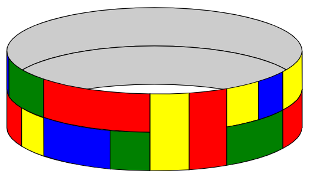

A certain type of flexible tile comes in three different sizes - $1 \times 1$, $1 \times 2$, and $1 \times 3$ - and in $k$ different colours. There is an unlimited number of tiles available in each combination of size and colour.
These are used to tile a closed loop of width $2$ and length (circumference) $n$, where $n$ is a positive integer, subject to the following conditions:
For example, the following is an acceptable tiling of a $2\times 23$ loop with $k=4$ (blue, green, red and yellow):

but the following is not an acceptable tiling, because it violates the "no four corners meeting at a point" rule:

Let $F_k(n)$ be the number of ways the $2\times n$ loop can be tiled subject to these rules when $k$ colours are available. (Not all $k$ colours have to be used.) Where reflecting horizontally or vertically would give a different tiling, these tilings are to be counted separately.
For example, $F_4(3) = 104$, $F_5(7) = 3327300$, and $F_6(101)\equiv 75309980 \pmod{1\,000\,004\,321}$.
Find $F_{10}(10\,004\,003\,002\,001) \bmod 1\,000\,004\,321$.
solve(k=4, n=3) → █solve(k=10, n=10004003002001) → █solve(k=6, n=101) → █Solution pending... the mathematician is still thinking.
Nothing here yet - come back when the dust has settled.